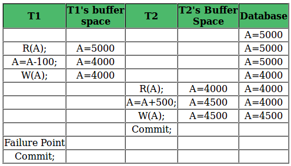
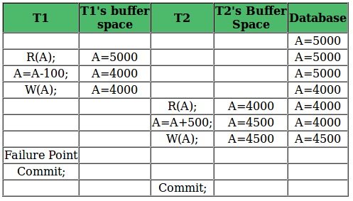
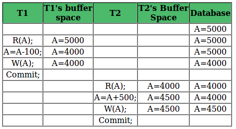

We have discussed the basics of Transactions and Schedules in Concurrency Control (Introduction) article. As discussed, a transaction may not execute completely due to hardware failure, system crash or software issues. In that case, we have to rollback the failed transaction. But some other transaction may also have used values produced by failed transaction. So we have to rollback those transactions as well.

Above table shows a schedule with two transactions, T1 reads and writes A and that value is read and written by T2. T2 commits. But later on, T1 fails. So we have to rollback T1. Since T2 has read the value written by T1, it should also be rollbacked. But we have already committed that. So this schedule is irrecoverable schedule.
{kind=link}
Irrecoverable Schedule: When Tj is reading the value updated by Ti and Tj is committed before commit of Ti, the schedule will be irrecoverable.

{kind=link}
Table 2 shows a schedule with two transactions, T1 reads and writes A and that value is read and written by T2. But later on, T1 fails. So we have to rollback T1. Since T2 has read the value written by T1, it should also be rollbacked. As it has not committed, we can rollback T2 as well. So it is recoverable with cascading rollback.
Recoverable with cascading rollback: If Tj is reading value updated by Ti and commit of Tj is delayed till commit of Ti , the schedule is called recoverable with cascading rollback.

{kind=link}
Table 3 shows a schedule with two transactions, T1 reads and writes A and commits and that value is read by T2. But if T1 fails before commit, no other transaction has read its value, so there is no need to rollback other transaction. So this is a cascadeless recoverable schedule.
Cascadeless Recoverable: If Tj reads value updated by Ti only after Ti is commited, the schedule will be cascadeless recoverable.
Question: Which of the following scenarios may lead to an irrecoverable error in a database system?
(A) A transaction writes a data item after it is read by an uncommitted transaction.
(B) A transaction reads a data item after it is read by an uncommitted transaction.
(C) A transaction reads a data item after it is written by a committed transaction.
(D) A transaction reads a data item after it is written by an uncommitted transaction.
Answer: See the example discussed in Table 1, a transaction is reading a data item after it is written by an uncommitted transaction, the schedule will be irrecoverable.
Related Post:
Conflict Serializability